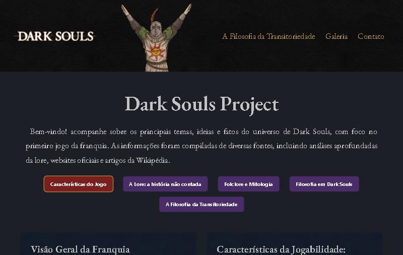

Projeto Dark Souls: A Essência por Trás das Cinzas
Ver o site · Código no GitHub · Portfólio

Inspirado no primeiro jogo da icônica franquia, criei um projeto que mergulha fundo na complexa tapeçaria de Dark Souls. Meu objetivo é desvendar os segredos de sua lore, a profundidade de sua filosofia e as ricas referências à mitologia e folclore japonês.
Conforme o projeto avançou, fui documentando cada descoberta e cada problema resolvido. Esta página reúne todo o material.
O projeto em resumo
- O que é: site de fã sobre o primeiro Dark Souls, com 5 abas de conteúdo (características, lore, folclore, filosofia e filosofia da transitoriedade), galeria de imagens e seção de créditos.
- Tecnologias: HTML, CSS (Flexbox, Grid e variáveis) e JavaScript puros.
- O que pratiquei: layout responsivo, acessibilidade, desempenho de imagens e SEO.
Como o projeto evoluiu
Versão 1: primeiro desenho
- Conteúdo dividido em arquivos HTML e carregado com
fetchao clicar nos botões. - Formulário de contato com serviço externo.
- Imagens em PNG e JPG, cerca de 4 MB.
Versão 2: revisão completa
- Página que tinha 1136 px de largura no celular passou a caber em 375 px. Veja Como encontrar e corrigir rolagem lateral.
fetchtrocado por abas acessíveis com conteúdo inline, e o artigo longo virou a quinta aba.- 46 imagens convertidas para WebP. Veja Imagens em WebP e carregamento preguiçoso.
- Metadados completos, imagem de compartilhamento,
robots.txtesitemap.xml. Veja SEO básico e imagem de compartilhamento. - Galeria com teclado e Esc, aviso de projeto de fã e seção "Sobre o projeto" no lugar do formulário.
Anotações
Layout e CSS
- Layout Responsivo com Flexbox
- Menu de navegação básico com flex
- Como encontrar e corrigir rolagem lateral no celular
- Reset CSS explicado
- Shorthand Background CSS
- Efeito parallax com HTML e CSS
- Efeito Drop Shadow com CSS
- Efeitos visuais com
filter - Importando Fontes no CSS:
@importvs.link
Imagens e desempenho
JavaScript e acessibilidade
- Abas acessíveis (ARIA) com conteúdo inline
- Carregamento dinâmico de conteúdo HTML (técnica antiga)
- Função JS para carregar o conteúdo (técnica antiga)
- Criando o Formulário HTML
SEO e publicação
O que aprendi
- Testar em 375 px desde o começo evita refazer o layout no fim.
- Conteúdo no HTML é mais rápido, mais acessível e mais fácil de manter que conteúdo carregado por script.
- Toda troca automática precisa de uma verificação: um script que confere os caminhos evitou imagens quebradas.
- O cache do GitHub Pages (10 minutos) pode fazer um conserto parecer que falhou.
Projeto de fã, sem fins lucrativos e sem vínculo com a FromSoftware ou a Bandai Namco.